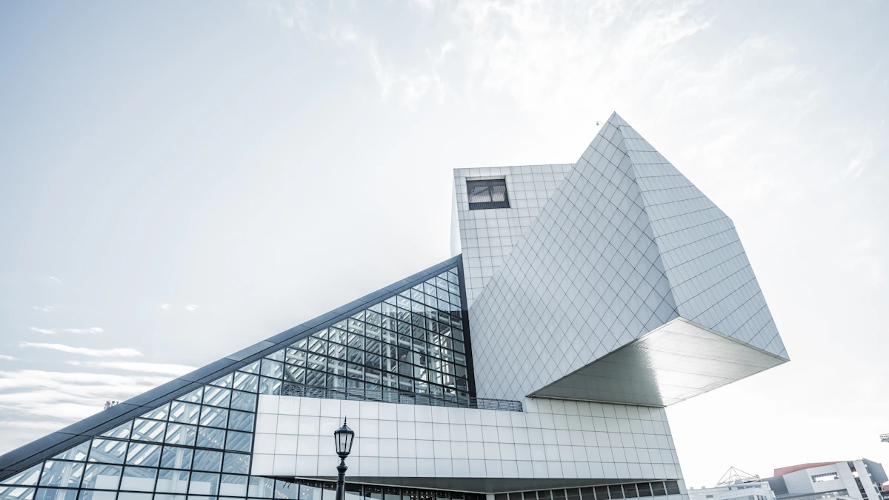

Edificación Institucional
Complejos institucionales y sedes corporativas
Desarrollo de modelos BIM para diseño integral, compatibilización de envolventes térmicas y soporte continuo para la licitación y ejecución de proyectos de alta exigencia técnica.